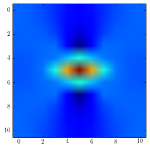
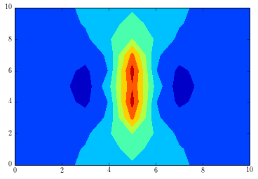
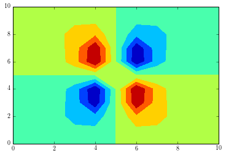
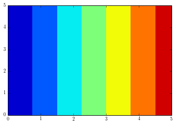

from pymks import ElasticFEModel
X = np.zeros((1, 11, 11, 2))
X[..., 0] = 10.
X[0, 5, 5, 0] = 1.
X[..., 1] = 0.3
model = ElasticFEModel()
y = model.predict(X)
sfepy: generating 144 vertices...
sfepy: ...done
sfepy: generating 121 cells...
sfepy: ...done
sfepy: saving regions as groups...
sfepy: region_all
sfepy: ...done
sfepy: updating variables...
sfepy: ...done
sfepy: setting up dof connectivities...
sfepy: ...done in 0.00 s
sfepy: matrix shape: (967, 967)
sfepy: assembling matrix graph...
sfepy: ...done in 0.00 s
sfepy: matrix structural nonzeros: 29343 (3.14e-02% fill)
sfepy: updating materials...
sfepy: m
sfepy: f
sfepy: ...done in 0.00 s
sfepy: nls: iter: 0, residual: 7.239688e+01 (rel: 1.000000e+00)
sfepy: rezidual: 0.00 [s]
sfepy: solve: 0.01 [s]
sfepy: matrix: 0.00 [s]
sfepy: nls: iter: 1, residual: 7.816319e-14 (rel: 1.079649e-15)
/home/wd15/git/pymks/pymks/elasticFEModel.py:151: DeprecationWarning: Implicitly casting between incompatible kinds. In a future numpy release, this will raise an error. Use casting="unsafe" if this is intentional.
i = np.floor((x + self.dx / 2 - minx) / self.dx, i_out)
/home/wd15/git/pymks/pymks/elasticFEModel.py:152: DeprecationWarning: Implicitly casting between incompatible kinds. In a future numpy release, this will raise an error. Use casting="unsafe" if this is intentional.
j = np.floor((y + self.dx / 2 - miny) / self.dx, j_out)
plt.imshow(y[0, :, :, 0])
<matplotlib.image.AxesImage at 0x4cc5610>

plt.contourf(y[0, :, :, 1])
<matplotlib.contour.QuadContourSet instance at 0x5298200>

plt.contourf(y[0, :, :, 2])
<matplotlib.contour.QuadContourSet instance at 0x497b878>

displacement_flat = vec.create_output_dict()['u'].data
displacement = displacement_flat.reshape((6, 6) + (2,))
print displacement[...,0]
[[ 0. 0. 0. 0. 0. 0. ]
[ 0.2 0.2 0.2 0.2 0.2 0.2]
[ 0.4 0.4 0.4 0.4 0.4 0.4]
[ 0.6 0.6 0.6 0.6 0.6 0.6]
[ 0.8 0.8 0.8 0.8 0.8 0.8]
[ 1. 1. 1. 1. 1. 1. ]]
u, v = s.data[:,0], s.data[:,1]
uu = u.reshape((6, 6)).swapaxes(0, 1)
plt.contourf(uu)
<matplotlib.contour.QuadContourSet instance at 0xa825368>

from sfepy.postprocess import Viewer
pb.save_state('linear_elasticity1.vtk', vec)
view = Viewer('linear_elasticity1.vtk')
view(vector_mode='warp_norm', rel_scaling=2,
is_scalar_bar=True, is_wireframe=True)
sfepy: point vectors u at [ 0. 0. 0.]
sfepy: range: -3.65e-15 1.00e+00 l2 norm range: 0.00e+00 1.00e+00
<sfepy.postprocess.viewer.ViewerGUI at 0x990b590>
max(u.flatten()), min(u.flatten())
(0.050315655904084031, -0.050315655904084912)
print vec.to_dict()['vec']
[ 0. 0. 0. ..., 0.94301265 0.00128292
0.94334275]